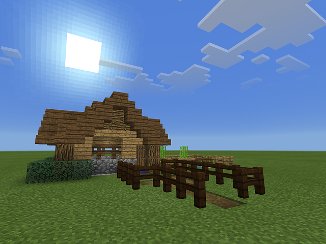
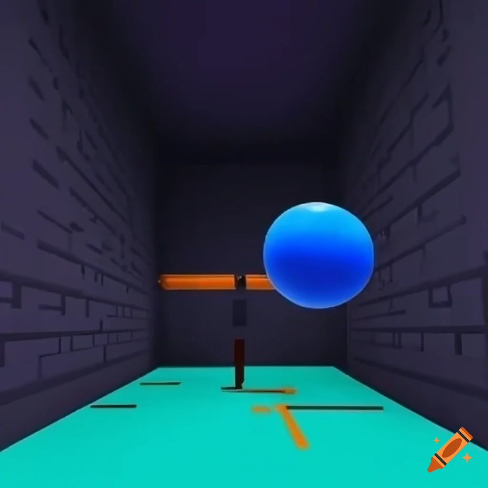
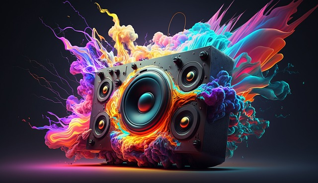
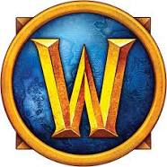
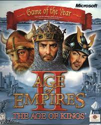
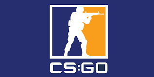
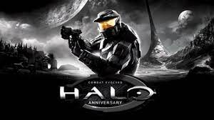

Como hemos visto antes, no todos los motores de juegos tienen las mismas funcionalidades, aunque sí existen algunos aspectos que son comunes entre muchos de ellos. Vamos a ver cuáles son los componentes más habituales que componen un motor de juegos:
Motor gráfico 2D
 Los motores gráficos 2D desempeñan un papel crucial en la creación de experiencias visuales cautivadoras en juegos y aplicaciones. A diferencia de los motores 3D, se centran en representaciones bidimensionales, lo que los hace ideales para proyectos que buscan estilos artísticos específicos o que requieren un enfoque en la simplicidad visual.
Los motores gráficos 2D desempeñan un papel crucial en la creación de experiencias visuales cautivadoras en juegos y aplicaciones. A diferencia de los motores 3D, se centran en representaciones bidimensionales, lo que los hace ideales para proyectos que buscan estilos artísticos específicos o que requieren un enfoque en la simplicidad visual.
Características Principales de los motores 2D:
- Renderizado 2D Eficiente: Los motores 2D están optimizados para renderizar gráficos en dos dimensiones, lo que permite un rendimiento eficiente y fluido en una variedad de plataformas.
- Gestión de Sprites: La gestión de sprites es esencial en entornos 2D. Los motores proporcionan herramientas para crear, animar y gestionar eficientemente sprites, que son elementos gráficos 2D fundamentales.
- Colisiones y Físicas 2D: Estos motores ofrecen sistemas integrados para detectar colisiones y aplicar físicas 2D realistas, facilitando el desarrollo de mecánicas de juego envolventes.
- Capas y Escenas: La capacidad para trabajar con capas y escenas simplifica la organización visual de un proyecto. Esto es crucial para juegos que implican múltiples niveles o ambientes.
- Editor Visual Intuitivo: Muchos motores gráficos 2D incluyen editores visuales intuitivos que permiten a los desarrolladores diseñar y ajustar escenas sin necesidad de escribir código, acelerando el proceso creativo.
Algunos motores gráficos 2D que han ganado popularidad son:
Motor gráfico o de renderizado 3D
Los motores gráficos 3D representan la columna vertebral de experiencias visuales envolventes y realistas en el desarrollo de juegos y simulaciones. Estos motores están diseñados para crear mundos tridimensionales, ofreciendo un amplio abanico de posibilidades para diseñadores y desarrolladores que buscan llevar sus proyectos a nuevas alturas visuales.
- Renderizado 3D Avanzado: La característica central es su capacidad para renderizar gráficos en tres dimensiones, permitiendo la creación de entornos visuales realistas y detallados.
- Modelado y Animación 3D: Los motores 3D facilitan el modelado y la animación de personajes y objetos tridimensionales, ofreciendo herramientas para esculpir mundos complejos y personajes expresivos.
- Físicas Realistas: La simulación de físicas 3D agrega un nivel de realismo, permitiendo la creación de interacciones realistas entre objetos y personajes dentro del entorno del juego.
- Luces y Sombras Dinámicas: La capacidad para gestionar luces dinámicas y sombras contribuye a la creación de ambientes visuales con efectos realistas, mejorando la inmersión del jugador.
- Cámaras y Perspectivas: La manipulación de cámaras y perspectivas tridimensionales permite a los desarrolladores contar historias desde ángulos diversos, mejorando la narrativa visual del juego.
Algunos motores gráficos 3D que han establecido estándares en la industria:
- Unity: Unity es un motor versátil que abarca tanto el desarrollo 2D como 3D, siendo ampliamente utilizado en la creación de juegos interactivos y experiencias inmersivas.
- Unreal Engine: Unreal Engine es conocido por su impresionante capacidad gráfica y se utiliza en la creación de juegos de alta gama, así como en proyectos de realidad virtual y aumentada.
- CryEngine: CryEngine es reconocido por sus capacidades gráficas avanzadas y se ha utilizado en la creación de juegos visualmente impresionantes.
| Ventajas y limitaciones entre motores 2D y 3D | |
| Ventajas | Limitaciones |
| Creación de mundos tridimensionales realistas. | Mayor complejidad de aprendizaje en comparación con motores 2D. |
| Amplia gama de herramientas para modelado y animación. | Requerimientos de hardware más altos para ejecutar gráficos 3D intensivos. |
| Adaptable a diversos géneros de juegos y aplicaciones. | |
Detector de colisiones
En el desarrollo de juegos, la detección de colisiones es un componente esencial que garantiza interacciones precisas y realistas entre objetos en el espacio del juego.
Estos detectores permiten a los desarrolladores implementar mecánicas como la respuesta a impactos, la simulación de físicas y la gestión de eventos, creando experiencias de juego envolventes y coherentes.
Tipos de Detectores de Colisiones:
- Bounding Box: La detección de colisiones mediante bounding boxes (cajas de contorno) es una técnica común y eficiente. Se utiliza un rectángulo o caja para envolver un objeto, y las colisiones se determinan comparando las cajas de los objetos involucrados.
- Bounding Sphere: Similar al bounding box, la detección de colisiones mediante bounding spheres (esferas de contorno) utiliza esferas que envuelven los objetos. Este método es especialmente útil para objetos más redondeados.
- Colisionadores de Malla (Mesh Colliders): Para objetos con formas más complejas, se utilizan colisionadores de malla que siguen la geometría detallada del modelo 3D. Esto proporciona colisiones más precisas, pero puede ser más intensivo en términos de recursos.
- Rayos y Detección de Intersecciones: Se utilizan rayos para determinar si hay intersecciones entre líneas y objetos. Esto es esencial para situaciones como disparos en primera persona y sistemas de iluminación.
Motor de físicas
 Los motores de físicas desempeñan un papel crucial en la creación de experiencias de juego realistas y convincentes. Estos motores simulan leyes físicas del mundo real, permitiendo que objetos, personajes y entornos interactúen entre sí de manera natural. Desde la caída de un objeto hasta la simulación de fluidos, los motores de físicas ofrecen un componente esencial para el desarrollo de juegos modernos.
Los motores de físicas desempeñan un papel crucial en la creación de experiencias de juego realistas y convincentes. Estos motores simulan leyes físicas del mundo real, permitiendo que objetos, personajes y entornos interactúen entre sí de manera natural. Desde la caída de un objeto hasta la simulación de fluidos, los motores de físicas ofrecen un componente esencial para el desarrollo de juegos modernos.
Características Principales:
- Simulación de Cuerpos Rígidos: Los motores de físicas pueden simular cuerpos rígidos, permitiendo que los objetos respondan a fuerzas externas, colisiones y gravedad de manera realista.
- Dinámica de Fluidos: Algunos motores avanzados incluyen simulaciones de fluidos, lo que permite la creación de efectos realistas de agua, humo o cualquier otro fluido en el juego.
- Fuerzas y Gravedad: Permiten la aplicación de fuerzas y gravedad a objetos, lo que afecta su movimiento y comportamiento.
- Colisiones y Restricciones: Los motores de físicas gestionan colisiones entre objetos y aplican restricciones, lo que evita comportamientos no deseados y garantiza la coherencia en la simulación.
La simulación de físicas puede ser intensiva en términos de recursos. La optimización es clave, y los desarrolladores ajustan la complejidad de la simulación según las necesidades del juego.
Por tanto, aunque tiene una serie de ventajas, se deben tener en cuenta sus limitaciones.
| Ventajas y limitaciones del motor de físicas |
|
| Ventajas | Limitaciones |
| Añade realismo y autenticidad a la jugabilidad. | Puede requerir ajustes finos para evitar comportamientos no deseados. |
| Permite la creación de efectos visuales impresionantes. | La simulación precisa puede ser intensiva en recursos. |
| Facilita el desarrollo de mecánicas de juego complejas. | |
Los motores de físicas son fundamentales para el desarrollo de juegos modernos, aportando realismo y dinamismo a las interacciones en el mundo virtual. Su capacidad para simular fuerzas, colisiones y comportamientos físicos contribuye significativamente a la inmersión del jugador y a la creación de experiencias de juego cautivadoras.
Motor de inteligencia artificial (IA)
Los motores de inteligencia artificial (IA) son elementos cruciales en el desarrollo de juegos, agregando capas de complejidad y adaptabilidad que mejoran significativamente la jugabilidad y la experiencia del usuario. Estos motores permiten la creación de personajes no jugables (PNJ o NPC en inglés) inteligentes, toma de decisiones contextual y comportamientos dinámicos que se ajustan a las acciones del jugador.
Características Principales:
- Toma de Decisiones Inteligente: Los motores de IA permiten que los PNJ tomen decisiones adaptativas basadas en su entorno, objetivos y acciones del jugador, creando una experiencia de juego más desafiante y realista.
- Aprendizaje de Máquina (Machine Learning): Algunos motores de IA incorporan capacidades de aprendizaje de máquina, permitiendo que los personajes y sistemas se adapten y evolucionen con el tiempo, mejorando la experiencia del usuario.
- Reconocimiento de Patrones: Los motores de IA pueden reconocer patrones en el comportamiento del jugador, adaptando dinámicamente la dificultad del juego o ajustando la narrativa según las elecciones del jugador.
- Comportamientos Emergentes: Facilitan la creación de comportamientos emergentes, donde las interacciones entre elementos del juego generan resultados no planificados pero coherentes.
Motor de sonidos
Los motores de sonido son elementos fundamentales en el diseño de juegos, aportando capas de profundidad y realismo a la experiencia del jugador.
Estos motores permiten la creación de ambientes sonoros envolventes, efectos de sonido dinámicos y una narrativa auditiva que complementa la acción visual, contribuyendo así a una experiencia de juego más inmersiva.
Algunas de sus características principales son:
- Reproducción de Sonidos en Tiempo Real: Los motores de sonido reproducen sonidos en tiempo real, permitiendo una respuesta inmediata a las acciones del jugador y eventos en el juego.
- Efectos de Sonido 3D: La capacidad para posicionar y modular sonidos en un entorno tridimensional, creando una experiencia auditiva que se ajusta a la ubicación y movimiento del jugador.
- Gestión de Música y Bandas Sonoras: Facilitan la integración y gestión de música de fondo, bandas sonoras y efectos musicales, sincronizando la música con eventos clave en el juego.
- Mezcla de Sonido Dinámica: Permite ajustar dinámicamente niveles de volumen, balance y efectos de sonido en respuesta a cambios en la acción del juego.
Tipos de Sonidos en Juegos:
- Efectos de Sonido (SFX): Sonidos específicos asociados con acciones y eventos en el juego, como pasos, disparos o explosiones.
- Música de Fondo: Bandas sonoras y composiciones musicales que complementan la atmósfera y la narrativa del juego.
- Diálogos y Voces: Grabaciones de voces y diálogos que dan vida a personajes y cuentan la historia del juego.
Gestor de comunicaciones en red
La gestión de comunicaciones en red es esencial en los juegos multijugador, permitiendo la interacción fluida entre jugadores, la sincronización de datos y la creación de experiencias de juego cooperativas o competitivas.
Estos sistemas garantizan una conectividad estable y eficiente, minimizando la latencia y ofreciendo una experiencia de juego sin problemas.
Las características principales de la comunicación en red son:
- Sincronización de Estados del Juego: Permite la sincronización de estados de juego entre los dispositivos de los jugadores, asegurando que todos vean el mismo estado del juego en cualquier momento.
- Detección y Gestión de Colisiones en Red: Facilita la detección de colisiones y eventos entre jugadores en un entorno multijugador, manteniendo la coherencia del juego.
- Latencia Baja y Respuesta Rápida: Minimiza la latencia para garantizar una respuesta rápida a las acciones de los jugadores, crucial en juegos en tiempo real.
- Servidores y Hosts Dedicados: Permite la implementación de servidores dedicados o hosts en juegos multijugador, facilitando la administración y la escalabilidad.
Para la implementación de la comunicación en red existen diferentes opciones. Entre ellas:
- Photon Unity Networking (PUN): Un complemento para Unity que facilita la creación de juegos multijugador en tiempo real.
- Mirror Networking for Unity: Otra solución para Unity, Mirror es una biblioteca de redes de código abierto que facilita el desarrollo de juegos multijugador.
- Unreal Engine Networking: Unreal Engine ofrece su propio conjunto de herramientas para gestionar la comunicación y la red en juegos multijugador.
Los tipos de modelos de red existentes son:
- Modelo Cliente-Servidor: Un servidor central gestiona la lógica del juego y la comunicación entre clientes.
- Modelo Peer-to-Peer: Los clientes se comunican directamente entre sí, siendo cada cliente también un servidor.
| Ejemplos |
|
| Cliente-servidor | Peer-to-Peer |
|
World of Warcraft (Blizzard Entertainment). Descripción: World of Warcraft utiliza una arquitectura cliente-servidor donde los servidores gestionan el estado del mundo, las interacciones entre jugadores y las misiones. Los clientes se conectan a los servidores para participar en un mundo persistente compartido. |
Age of Empires II (Voobly). Descripción: Muchos juegos RTS utilizan una arquitectura P2P donde los jugadores se conectan directamente entre sí para partidas multijugador. Age of Empires II, a través de plataformas como Voobly, utiliza esta arquitectura. |
|
Counter-Strike: Global Offensive (CS:GO): Descripción: CS:GO utiliza una arquitectura cliente-servidor para partidas multijugador. Los servidores gestionan el estado del juego, la lógica de las partidas y la conexión de los jugadores, mientras que los clientes se conectan a estos servidores para participar en partidas. |
Halo: Combat Evolved (antes de Xbox Live). Descripción: Algunos juegos FPS han utilizado arquitecturas P2P para partidas multijugador. En el caso de Halo: Combat Evolved en su versión de PC antes de Xbox Live, los jugadores se conectaban directamente unos con otros. |